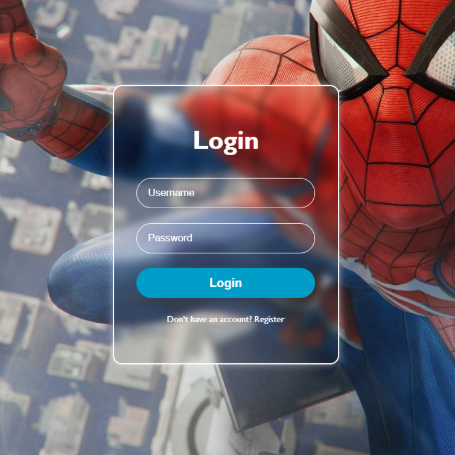
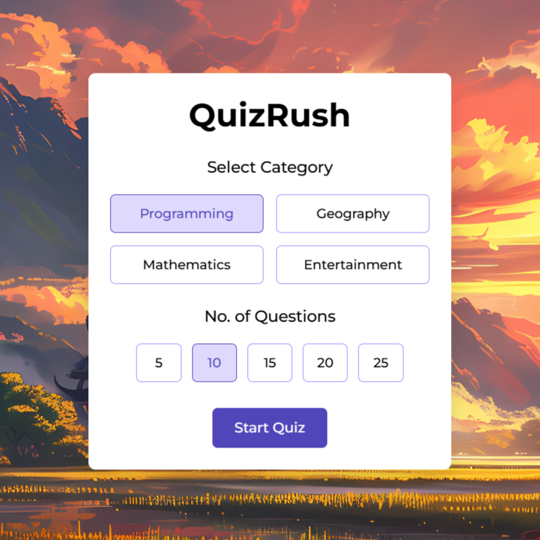
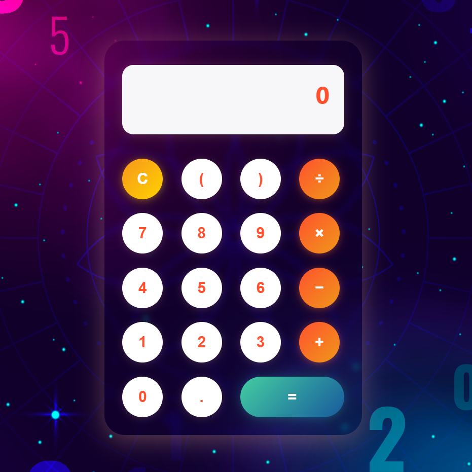

Implemented a user-friendly login interface with modern UI elements and form validation for enhanced user experience.
Check out
The quiz web app features a modern UI, real-time scoring, a timer, and randomized questions for a dynamic learning experience.
Check out
SmartCalc is a lightweight and modern calculator app that performs basic arithmetic operations with a clean UI and smooth performance. Perfect for daily use.
Check out